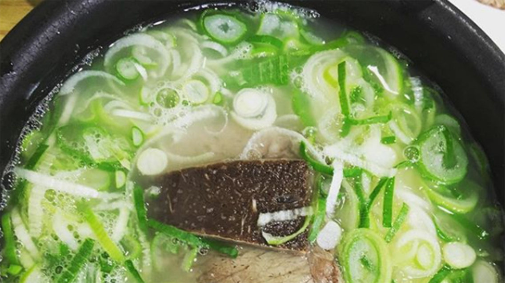
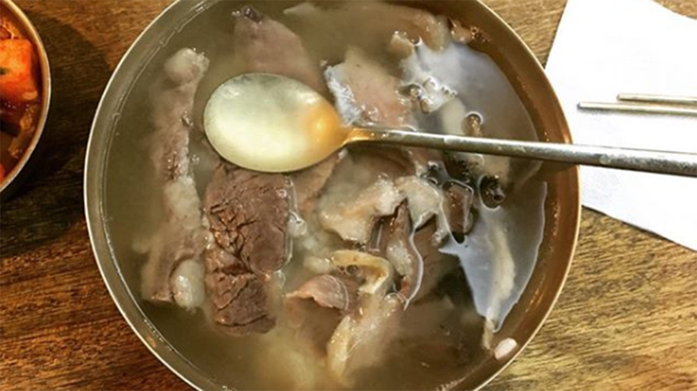
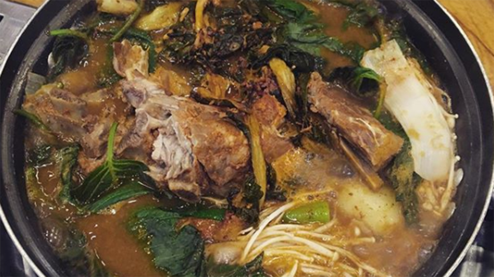
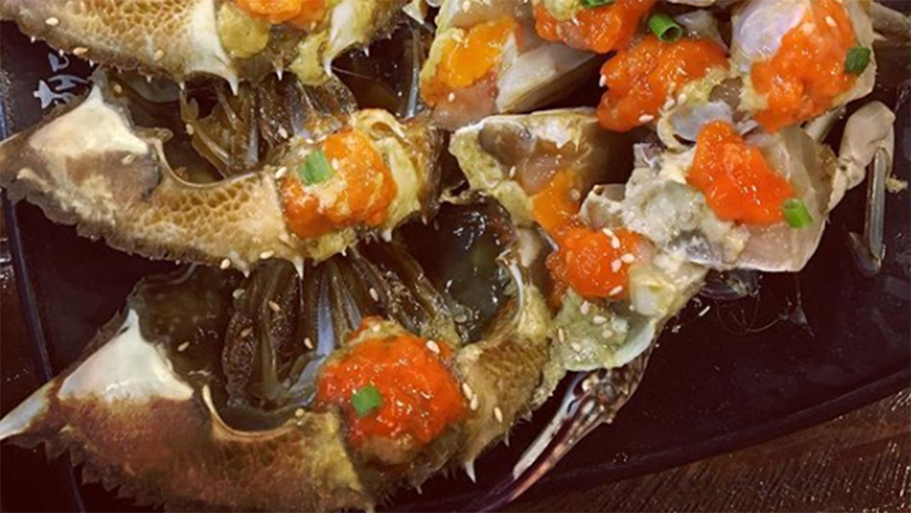

Ox Bone Soup (설렁탕) at Pung Nyun Ok (풍년옥설렁탕)
서울 종로구 당주동 17-1
17-1 Dangju-dong, Jongno-gu, Seoul, South Korea

Photo Attribution: received permission to use photos from original photographer @erist on
Instagram | Cropped and resized from original
Oxtail Soup (곰탕) at Hadongkwan (하동관)
서울 중구 명동 명동 9 길 12
South Korea, Seoul, Jung-gu, Myeong-dong, Myeongdong 9-gil, 12

Photo Attribution: received permission to use photos from original photographer @erist on
Instagram | Cropped and resized from original
Meat Potato Soup (감자탕) at Geum Ba Wee (금바위감자탕)
서울시 송파구 가락동 112-8 번지
112-8 Garak-dong, Songpa-gu, Seoul, South Korea

Photo Attribution: received permission to use photos from original photographer @erist on
Instagram | Cropped and resized from original
Seasoned Raw Crabs (게장) at Hwa Hae Dang (화해당)
서울특별시 충청남도 태안군 근흥면 도황리 223
223 Sohwang-ri, Gunheung-myeon, Taean-gun, Chungcheongnam-do, Seoul, South Korea

Photo Attribution: received permission to use photos from original photographer @erist on
Instagram | Cropped and resized from original